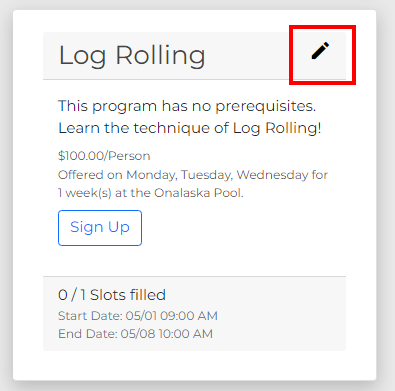
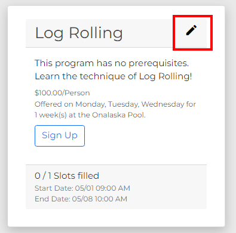
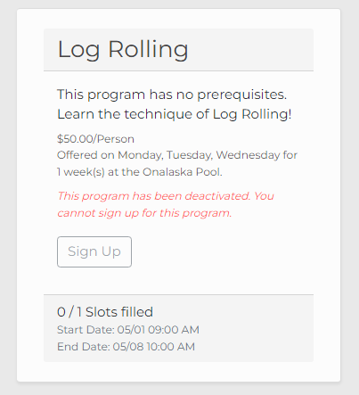

Deactivating a Program¶
While programs in the system may not be deleted, they may be deactivated to prevent users from signing up for them. This page will explain how to deactivate a program and the consequences of doing so.
Navigate to the Programs page and click the pencil icon of the program you would like to deactivate.
 

Click the red “Deactivate” button.
A prompt will ask you to confirm the deactivation. Please review the following before going through with the deactivation.
A program cannot be reactivated after its deactivation.
A program cannot be edited after its deactivation.
A program can still be seen on the Programs page by Staff members after its deactivation, with a message that it has been deactivated.
Deactivating the program will cause any enrollments associated with the program to be cancelled.
Any users who have enrolled in the program prior to its deactivation will see the program in their Enrollments with a message that it has been deactivated.
If you would like to proceed, confirm your decision by clicking “Deactivate” in the prompt.

After deactivating the program, it will appear on the Programs page with all of its enrollments removed.
